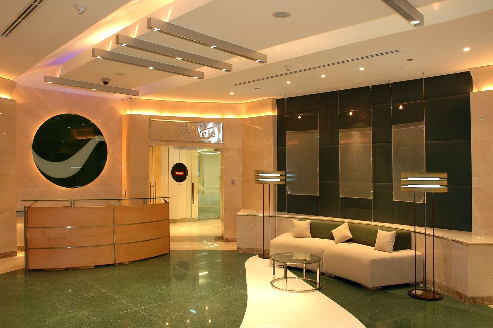

Rotana Offices and Studios, Nile Plaza
Mixed-use development · Garden City, Cairo, Egypt
Project management and supervision for offices and studios in Garden City, Cairo, for Kingdom Holding Company.
Garden City: Garden City is an early-20th-century real estate development loosely based on the English garden city movement, and is today a mixed residential and administrative quarter in qism Qasr al-Nil in the West District of Cairo, Egypt. Source
Partners
PUD
Client

More from Cairo
 Downtown Cairo RegenerationCairo · 2012
Downtown Cairo RegenerationCairo · 2012 Olympic Plaza Tower, MaadiMaadi, Cairo · 2008
Olympic Plaza Tower, MaadiMaadi, Cairo · 2008 Organ Transplant Centre, Nasser Institute for Research and TreatmentGreater Cairo
Organ Transplant Centre, Nasser Institute for Research and TreatmentGreater Cairo Sumou Boulevard, New CairoMostakbal City, New Cairo · 2026
Sumou Boulevard, New CairoMostakbal City, New Cairo · 2026 Al Alamein Riviera Vision Master PlanNorth Coast (New Alamein) · 2022
Al Alamein Riviera Vision Master PlanNorth Coast (New Alamein) · 2022 Gargoub New Port CityGargoub, Matrouh · 2021
Gargoub New Port CityGargoub, Matrouh · 2021